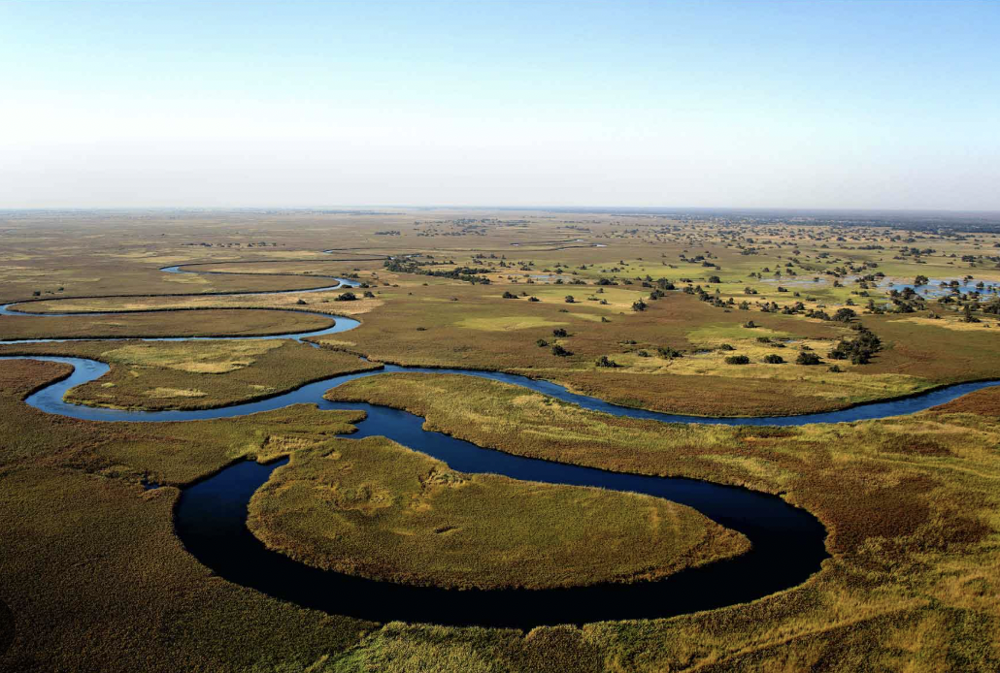
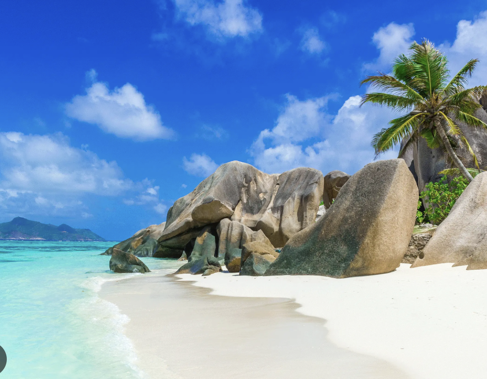

| Beach
|
Cities
|
Countryside
|
Boulders Beach, South Africa
- Best things to do: Visit the penguin colony, swim with the penguins, and relax on the sandy beach surrounded by granite boulders.
- Best time to visit: November to March – warm weather ideal for beach activities.
- Insider’s tip: Bring some sunscreen and a hat, as the sun can be strong even during cooler months.
- Recommended duration: 1–2 days.
Know More about Boulders Beach! |
Cape Town, South Africa
- Best things to do: Visit Table Mountain, explore the V&A Waterfront, and tour Robben Island.
- Best time to visit: November to February – the summer months with great weather for outdoor activities.
- Insider’s tip: Take a cable car up Table Mountain for panoramic views of the city and coastline.
- Recommended duration: 3–4 days.
Know More about Cape Town! |
The Drakensberg, South Africa
- Best things to do: Hike to the top of the Drakensberg Mountains, explore the famous Amphitheatre, and visit the ancient San rock art sites.
- Best time to visit: April to September – cooler weather ideal for hiking and outdoor activities.
- Insider’s tip: Book a guided tour to explore the best hiking trails and discover the hidden beauty of the region.
- Recommended duration: 2–3 days.
Know More about The Drakensberg! |
Diani Beach, Kenya
- Best things to do: Enjoy water sports like kite surfing, visit the Colobus Conservation Centre, and unwind on the white sandy beach.
- Best time to visit: December to March – the hot and dry season is perfect for beach activities.
- Insider’s tip: Visit the nearby Kisite-Mpunguti Marine Park for snorkeling and diving opportunities with abundant marine life.
- Recommended duration: 3–4 days.
Know More about Diani Beach! |
Marrakech, Morocco
- Best things to do: Explore the Jemaa el-Fnaa square, visit the beautiful Jardin Majorelle, and shop in the souks.
- Best time to visit: March to May and September to November – pleasant weather for sightseeing and exploring the city.
- Insider’s tip: Visit the Medina at night when the atmosphere comes alive with street performers and food vendors.
- Recommended duration: 2–3 days.
Know More about Marrakech! |
The Okavango Delta, Botswana
 - Best things to do: Explore the delta by mokoro (traditional canoe), enjoy game viewing in the Moremi Game Reserve, and visit the wildlife-rich areas.
- Best time to visit: June to October – dry season when animals gather around water sources and game viewing is at its best.
- Insider’s tip: Stay in a luxury safari lodge for an unforgettable experience and incredible views of the delta.
- Recommended duration: 3–4 days.
Know More about The Okavango Delta! |
Anse Source d'Argent, Seychelles
 - Best things to do: Explore the striking granite rock formations, swim in the turquoise waters, and enjoy the picturesque beach views.
- Best time to visit: April to May and October to November – calm seas and warm weather are perfect for relaxation and water activities.
- Insider’s tip: Arrive early in the morning to enjoy the beach before the crowds arrive.
- Recommended duration: 1–2 days.
Know More about Anse Source d'Argent! |
Cairo, Egypt
- Best things to do: Visit the Pyramids of Giza, the Egyptian Museum, and explore the bustling Khan El Khalili market.
- Best time to visit: October to April – cooler temperatures perfect for sightseeing.
- Insider’s tip: Hire a local guide to fully experience the history and culture of the ancient sites.
- Recommended duration: 3–4 days.
Know More about Cairo! |
Lake Bunyonyi, Uganda
- Best things to do: Take a boat tour of the lake, visit the nearby islands, and enjoy the tranquil environment while bird watching.
- Best time to visit: June to September – pleasant weather with minimal rainfall and perfect for outdoor activities.
- Insider’s tip: Enjoy local Ugandan dishes at lakeside restaurants and take a moment to appreciate the peaceful surroundings.
- Recommended duration: 2–3 days.
Know More about Lake Bunyonyi! |
|
Zanzibar, Tanzania
- Best things to do: Visit the spice plantations, explore Stone Town, and relax on the pristine beaches.
- Best time to visit: June to October – dry season with ideal conditions for beach relaxation and exploring the island.
- Insider’s tip: Try a spice tour to experience Zanzibar’s rich history and local flavors.
- Recommended duration: 4–5 days.
Know More about Zanzibar! |
Accra, Ghana
- Best things to do: Visit the Cape Coast Castle, explore Jamestown, and relax at Labadi Beach.
- Best time to visit: November to March – the dry season with warm temperatures and minimal rainfall.
- Insider’s tip: Take a guided tour to understand the history behind the cultural landmarks, especially the slave trade sites.
- Recommended duration: 2–3 days.
Know More about Accra! |
The Maasai Mara, Kenya
 - Best things to do: Go on a safari to see the Big Five, visit the Maasai villages, and witness the Great Migration (seasonal).
- Best time to visit: July to October – dry season with the best wildlife viewing, especially during the Great Migration.
- Insider’s tip: Stay at a luxury tented camp for a unique and immersive safari experience in the heart of the Mara.
- Recommended duration: 3–4 days.
Know More about The Maasai Mara! |